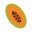
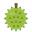
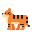
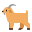
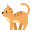

Akhir bukuท้ายเล่ม
Glosari
อภิธานศัพท์
Semua perkataan: 66, disusun mengikut abjadคำศัพท์ทั้งหมด 66 คำ เรียงตามตัวอักษร
| Rumi | Jawi | Maksudความหมาย | Pelajaranบทที่ |
|---|---|---|---|
| اير | น้ำ | 10 | |
| ตุ๊กตา | 9 | ||
| Angkat tangan. | ยกมือ | 4 | |
| ayam | ايم | ไก่ | 8 |
| Baca bersama-sama. | อ่านพร้อมกัน | 4 | |
| baik hati | ใจดี | 6 | |
| berkongsi | แบ่งปัน | 6 | |
| bermain | เล่น | 6 | |
| bersama-sama | ด้วยกัน | 6 | |
| برسيه | สะอาด | 10 | |
 betik | بيتيق | มะละกอ | 8 |
| ลูกบอล | 9 | ||
| Buka buku. | เปิดหนังสือ | 4 | |
| buku cerita | หนังสือนิทาน | 7 | |
| bunga | بوڠا | ดอกไม้ | 3 |
| burung | بوروڠ | นก | 8 |
| congkak | หมากขุม | 9 | |
| Dengar baik-baik. | ฟังให้ดี | 4 | |
 durian | دورين | ทุเรียน | 8 |
| gasing | ลูกข่าง | 9 | |
| guli | ลูกแก้ว | 9 | |
 harimau | هاريماو | เสือ | 1 |
| هوجن | ฝน | 10 | |
| ikan | ايکن | ปลา | 8 |
| itik | ايتيق | เป็ด | 8 |
 kambing | کمبيڠ | แพะ | 8 |
| เพื่อน | 6 | ||
| kelapa | کلاڤ | มะพร้าว | 8 |
| kerbau | کرباو | ควาย | 1 |
| kereta mainan | รถของเล่น | 9 | |
| khabar | خبر | ข่าว | 3 |
 kucing | کوچيڠ | แมว | 8 |
| layang-layang / wau | ว่าว | 9 | |
| lembu | لمبو | วัว | 8 |
| maghrib | مغرب | เวลามัฆริบ | 3 |
| mainan | ของเล่น | 9 | |
| مندي | อาบน้ำ | 10 | |
| manggis | مڠݢيس | มังคุด | 8 |
| membaca | อ่าน | 7 | |
| meminjam | ยืม | 7 | |
| memulangkan | คืน | 7 | |
| menolong | ช่วยเหลือ | 6 | |
| مينوم | ดื่ม | 10 | |
| nyanyi | ڽاڽي | ร้องเพลง | 3 |
| ڤنتاي | ชายหาด | 1 | |
| peramah | เป็นมิตร ยิ้มแย้ม | 6 | |
| perpustakaan | ห้องสมุด | 7 | |
| ڤيسڠ | กล้วย | 8 | |
| pulau | ڤولاو | เกาะ | 1 |
| pustakawan | บรรณารักษ์ | 7 | |
| rajin | ขยัน | 6 | |
| rak buku | ชั้นหนังสือ | 7 | |
| rambutan | رمبوتن | เงาะ | 8 |
| santai | سنتاي | สบาย ๆ | 1 |
| senyap | เงียบ | 7 | |
| Sila berdiri. | เชิญยืน | 4 | |
| Sila duduk. | เชิญนั่ง | 4 | |
| سوڠاي | แม่น้ำ | 1 | |
| syukur | شکور | ขอบคุณอัลลอฮ์ | 3 |
| tembikai | تمبيکاي | แตงโม | 8 |
| Terima kasih. | ขอบคุณ | 5 | |
| Tolong jangan bising. | กรุณาอย่าส่งเสียงดัง | 4 | |
| Tolong tutup pintu. | ช่วยปิดประตูหน่อย | 4 | |
| Tulis nama kamu. | เขียนชื่อของเธอ | 4 | |
| Tutup buku. | ปิดหนังสือ | 4 | |
| wuduk | وضوء | การอาบน้ำละหมาด | 10 |